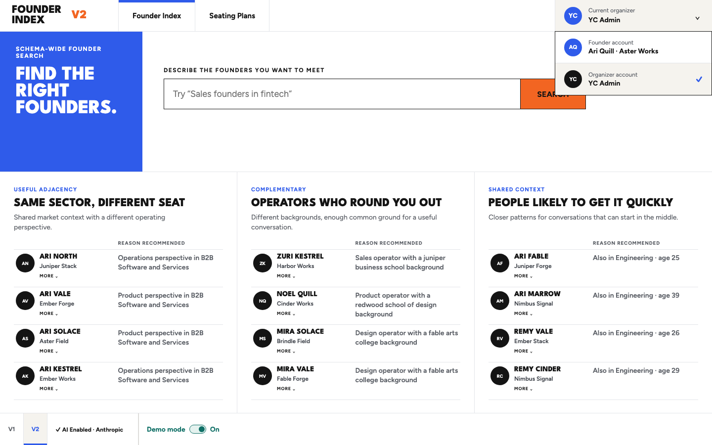

Founder discovery → Seating intelligence
Search the people.
Shape the room.
Start with explainable discovery, refine a founder cohort, and turn it into a seating arrangement you can analyze and improve. Switch between Founder and YC Admin modes, explore safely with Demo data, and add AI only where it helps.


01 · Search → seating
One cohort. One continuous flow.
Natural language becomes visible search dimensions. Refine, sort, and group the results, then send that exact ordered cohort into dinner setup without rebuilding it.
- SearchNatural language compiles into editable dimensions
- HandoffThe ordered result cohort moves directly into Dinner Matching
- SetupOrganizers add capacity, objectives, weights, and hard rules

02 · Zero-query discovery
Understand the index before you search.
The first screen is useful without a query. It surfaces explainable founder groups based on useful adjacency, complementary backgrounds, and shared context, with a visible reason for every recommendation.

03 · Founder and admin modes
The same index, shaped around two jobs.
Founder mode keeps discovery and export front and center. YC Admin mode adds saved plans, cohort handoff, dinner configuration, table editing, analysis, and export. The account switcher makes the boundary explicit.

04 · Public Demo data
Explore the whole product without touching real data.
Demo mode ships with 160 fictitious founders, realistic search results, and saved seating history. The public deployment is read-only, so visitors can inspect every major workflow without changing shared data or entering credentials.


05 · Arrangement analysis
See where the room works and where it does not.
The analysis view scores the arrangement against organizer objectives, surfaces the weakest placements, shows match distribution and role mix, and recommends concrete improvements that remain under organizer control.


06 · Optional AI integration
AI helps. The product still works without it.
AI can interpret natural-language search, suggest dinner criteria, rerank results, and collect cited web evidence. Basic Search and deterministic dinner matching remain available when AI is disabled.


Architecture
One deployable service. Clear boundaries.
- BrowserReact V2 surfaces, Basic Search, local Demo toggle, and no credential persistence.
- ServerTyped founder, enrichment, provider, dinner, versioning, and export routes.
- SQLiteDurable founders, append-only dinner versions, evidence history, and encrypted provider secrets.
- ProvidersOptional adapters for interpretation and cited web search; deterministic matching works without them.
Release storyboard
Seventeen verified states.
The sequence covers discovery, search, failure recovery, plan creation, analysis, persistence, export, evidence, AI configuration, and responsive behavior.